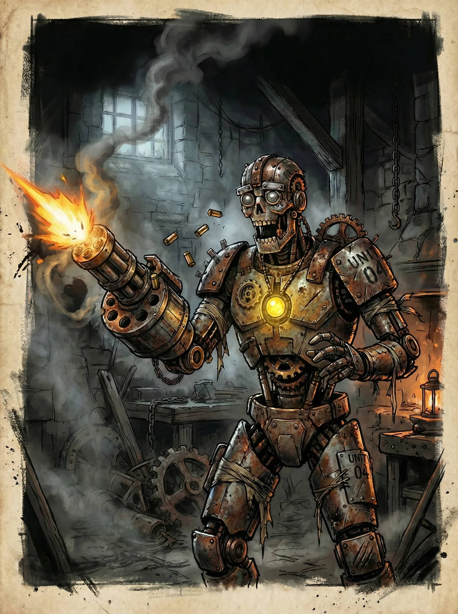

Autômato
Seres antigos que carregam tecnologias esquecidas e sigilosas.
Os autômatos conseguem falar, sentir e ter sua própria personalidade. Carregam tecnologias antigas para a manutenção da espécie.
Características de Raça
Corpo Mecânico
- Você é imune a efeitos biológicos: Sangramento, Envenenamento, doenças.
- É vulnerável (2x dano) a dano elemental.
- Se alimenta de sucata.
Automanutenção
Possui mecanismo de automanutenção (cura ao descansar), mas para cura maior deve ser consertado com item Kit de Manutenção.
Relações Sociais
A maioria das raças e nações são indiferentes a respeito dos Autômatos. Mas alguns os veem como abominações, puramente por preconceito, outros buscam a tecnologia sigilosa que os fazem prosperar.
Sistema de Tecnologias
Começa com 2 tecnologias Tier 1. Limite de tecnologias equipadas: 2 + mod. Constituição.
Pode substituir tecnologias em descansos longos.
Visão Térmica
Você consegue ver em um mapa de calor naturalmente.
Acabamento Refinado
Você não produz barulho algum em suas dobras, ventoinhas e pegadas.
Acesso à Biblioteca Autômata
Banco de dados público dos autômatos.
Sensor de Proximidade
Detecta mudanças no ar e vibrações.
Fibra de Carbono
Exoesqueleto fabricado com fibra de carbono.
Suspensões Lubrificadas
Incrivelmente aerodinâmico e eficiente ao correr.
Sistema de Reconhecimento de Ameaças
Algoritmo de análise de movimentos inimigos.
Núcleo-Duplo
Núcleo de energia substituto.
Braço Balístico
Mecanismo de disparo oculto no antebraço.
Lâmina Retrátil
Lâmina afiada emerge do pulso.
Capacitores de Energia
Reserva energética para adrenalina.
Auto-Reparador
Órgão-biônico que aproveita sucata.
Módulo de Linguagem
Tremenda quantidade de informação linguística.
Scanner de Condição
Lentes que avaliam criaturas.
Backup
Caixa preta com visor pequeno.
🎲 Achar Tecnologias em Lojas
Role d100 ao entrar em uma loja que possa ter tecnologias:
| d100 | Resultado |
|---|---|
| 1-79 | O vendedor não possui nada. |
| 80-89 | Encontra 1 tecnologia. Role 1d12. |
| 90-99 | Encontra 2 tecnologias. Role 2d12. |
| 100 | Encontra 3 tecnologias. Role 3d12. |
O d12 determina qual tecnologia a partir do Tier 1. Resultados repetidos são rerolados.